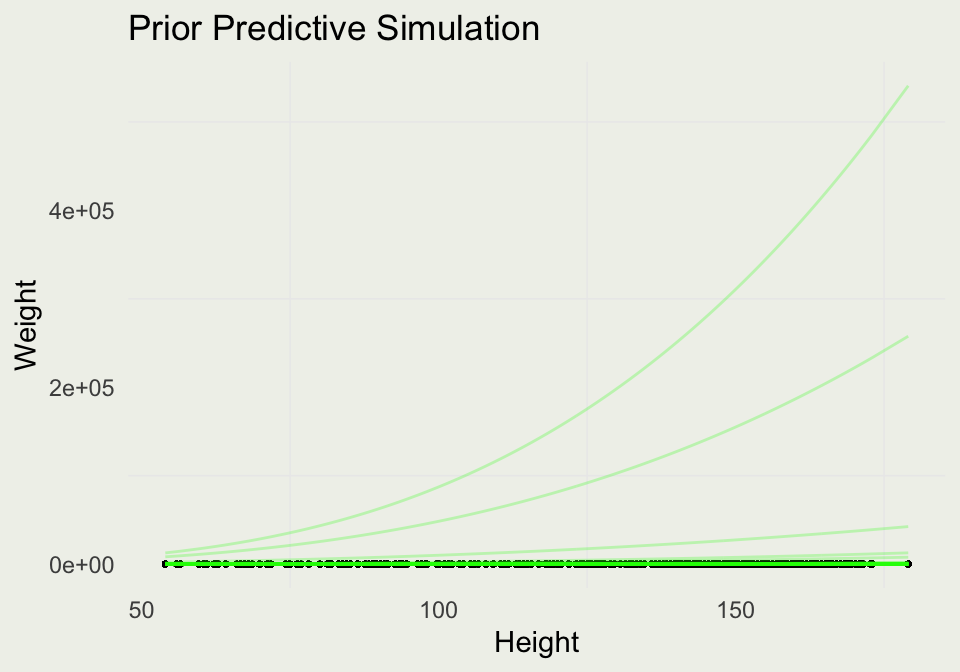
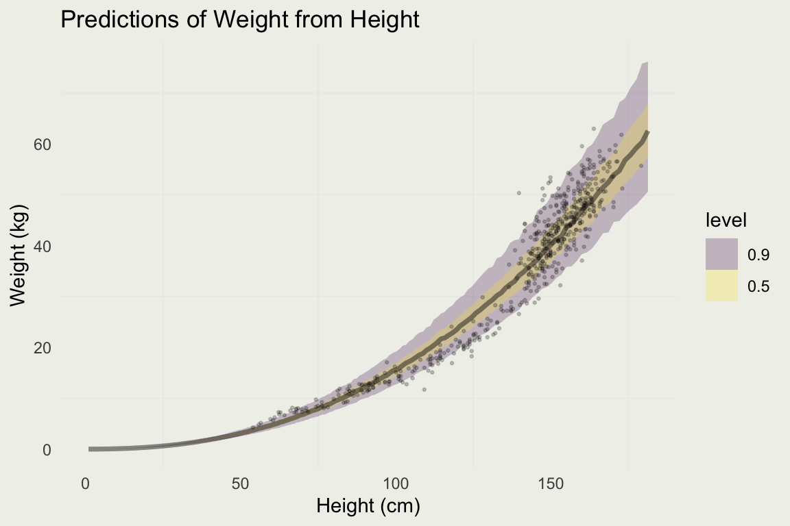

Bayesian Inference
NYU Applied Statistics for Social Science Research
Eric Novik | Spring 2023 | Lecture 6
More Linear Models and Modeling Counts
- Improving the model by thinking about the DGP
- Adding categorical predictors
- Adding interactions
- More on model evaluation and comparison
- Modeling count data with Poisson
- Model evaluation and overdispersion
- Negative binomial model for counts
- Generalized linear models
- [Depending on time/space: more on Bayesian Workflow]
- [Insert an overdispersion image here]
\[ \DeclareMathOperator{\E}{\mathbb{E}} \DeclareMathOperator{\P}{\mathbb{P}} \DeclareMathOperator{\V}{\mathbb{V}} \DeclareMathOperator{\L}{\mathcal{L}} \DeclareMathOperator{\I}{\text{I}} \DeclareMathOperator*{\argmax}{arg\,max} \DeclareMathOperator*{\argmin}{arg\,min} \]
Motivating Example
- At the end of the last lecture we saw that the linear model did not capture the relationship between height and weight very well
- That’s not surprising: the process can’t be linear as it has a natural lower and upper bound
- To remedy this situation, we have to think generatively: either biologically or geometrically/physically
- The biology of growth is very complex – we would have to think about what causes primate (or animal) growth and how growth translates into height and weight, which is likely effected by genetic and environmental factors
- Fortunately, there is a more straightforward, geometrical approach
- Richard McElreath has a nice presentation in Chapter 16 of his book (2nd edition) – we reproduce a simplified version here
Deriving the model
- In the spirit of the spherical cow, we can think of a person as a cylinder
- The volume of the cylinder is: \(V = \pi r^2 h\), where \(r\) is a person’s radius and \(h\) is the height
- It seems reasonable to assume that a person’s width (\(2r\)) is proprtional to the height \(h\): \(r = kh\) where \(k\) is the proportionality constant
- Therefore: \(V = \pi r^2 h = \pi (kh)^2 h = \theta h^3\) where \(\theta\) absorbed other constant terms
- If the human body has approximately the same density, weight should be proportional to Volume: \(w = kV\), \(w = k\theta h^3\)
- We will absorbe \(k\) into \(\theta\), and so \(w = \theta h^3\), so the weight is proportional to the cube of height

Deriving the model
- We can therefore write the model in the following way: \[ \begin{eqnarray} w_i & \sim & \text{LogNormal}(\mu_i, \sigma) \\ \exp(\mu_i) & = & \theta h_i^3 \\ \theta & \sim & \text{prior}_{\theta}(.) \\ \sigma & \sim & \text{Exponetial}(1) \end{eqnarray} \]
- Weight is positive quantity and we give it a LogNormal distribution
- \(\exp(\mu_i)\) is the median of a LogNormal, which is where we specify our cubic relationship between weight and height
- Notice that the model for the conditional median is \(\mu_i = \log(\theta) + 3 \log(h_i)\), in other words we do not need to estimate the coefficient on height, we only need the intercept
- In
RStanArm, we can estimate a similar model as a linear regression of log weight on log height; (in Stan, we can write this model directly)
Choosing Priors
- In our log-log linear regression we have an intercept and coefficient on log height, which we said was 3
- Instead of fixing it at 3, we will estimate it and give it an informative prior, where most of the mass is between 2 and 4
- The implies something like \(\beta \sim \text{Normal}(3, 0.3)\)
- We will leave our \(\sigma \sim \text{Exponetial}(1)\)
- We have less intuition about the intercept, so we will give it a wider prior on a scale of centered predictors (
RStanArmcenteres by default): \(\alpha \sim \text{Normal}(0, 5)\) - How do we now these priors are reasonable on the predictive scale (weight)?
- We don’t, so we will perform another prior predictive simulation
Prior Predictive Simulation
- Compute the new log variables:
- Run prior predictive simulation:
Prior Predictive Simulation
Prior Predictive Simulation
- We can examine what this looks like on the original scale by exponentiating the predictions:

Prior Predictive Simulation
- Our intercept scale seems too wide, so we will make some adjustments:
m3 <- stan_glm(
log_w ~ log_h,
data = d,
family = gaussian,
prior = normal(3, 0.3),
prior_aux = exponential(1),
prior_intercept = normal(0, 2.5),
prior_PD = 1, # don't evaluate the likelyhood
seed = 1234,
refresh = 0,
chains = 4,
iter = 600
)
d |>
add_epred_draws(m3, ndraws = 100) |>
ggplot(aes(y = weight, x = height)) +
geom_point(size = 0.5) +
geom_line(aes(y = exp(.epred), group = .draw),
alpha = 0.25, color = 'green') +
xlab("Height") + ylab("Weight") +
ggtitle("Prior Predictive Simulation")
Fitting the Model
- We can likely do better with these priors, but most of the simulations are covering the data and so we proceed to model fitting
m3 <- stan_glm(
log_w ~ log_h,
data = d,
family = gaussian,
prior = normal(3, 0.3),
prior_aux = exponential(1),
prior_intercept = normal(0, 2.5),
seed = 1234,
refresh = 0,
chains = 4,
iter = 600
)
summary(m3)
Model Info:
function: stan_glm
family: gaussian [identity]
formula: log_w ~ log_h
algorithm: sampling
sample: 1200 (posterior sample size)
priors: see help('prior_summary')
observations: 544
predictors: 2
Estimates:
mean sd 10% 50% 90%
(Intercept) -8.0 0.1 -8.1 -8.0 -7.8
log_h 2.3 0.0 2.3 2.3 2.4
sigma 0.1 0.0 0.1 0.1 0.1
Fit Diagnostics:
mean sd 10% 50% 90%
mean_PPD 3.4 0.0 3.4 3.4 3.5
The mean_ppd is the sample average posterior predictive distribution of the outcome variable (for details see help('summary.stanreg')).
MCMC diagnostics
mcse Rhat n_eff
(Intercept) 0.0 1.0 619
log_h 0.0 1.0 621
sigma 0.0 1.0 923
mean_PPD 0.0 1.0 1436
log-posterior 0.1 1.0 529
For each parameter, mcse is Monte Carlo standard error, n_eff is a crude measure of effective sample size, and Rhat is the potential scale reduction factor on split chains (at convergence Rhat=1).Comparing to the Linear Model
Plotting Prediction Intervals
Predicting For New Data
log_h <- seq(0, 5.2, len = 500)
new_data <- tibble(log_h)
pred <- add_predicted_draws(new_data, m3)
pred |>
ggplot(aes(x = exp(log_h), y = exp(.prediction))) +
stat_lineribbon(.width = c(0.90, 0.50), alpha = 0.25) +
xlab("Height (cm)") + ylab("Weight (kg)") + ggtitle("Predictions of Weight from Height") +
geom_point(aes(y = weight, x = height), size = 0.5, alpha = 0.2, data = d)Example: Quality of Wine
- To build up a larger regression model, we will take a look at the quality of wine dataset from the UCI machine learning repository

Example: Quality of Wine
- Our task is to predict (subjective) quality of wine from measurements like acidity, sugar, and chlorides
- The outcome is ordinal, which should be analyzed using ordinal regression, but we will start with linear regression
d <- readr::read_delim("data/winequality-red.csv")
# remove duplicates
d <- d[!duplicated(d), ]
p1 <- ggplot(aes(x = quality), data = d)
p1 <- p1 + geom_histogram() +
ggtitle("Red wine quality ratings")
p2 <- ggplot(aes(quality, alcohol), data = d)
p2 <- p2 +
geom_point(position =
position_jitter(width = 0.2),
size = 0.3)
grid.arrange(p1, p2, nrow = 2)
Example: Quality of Wine
- As before, we will center the predictors, but this time we will also devide by standard deviation
- This will make the coefficients comparable
- If you have binary inputs, it may make sense to divide by 2 standard deviations (Page 186 in Regresion and Other Stories)
- We will also center the quality score
# A tibble: 6 × 12
fixed_acidity volatile_acidity citric_acid residual_sugar chlorides
<dbl> <dbl> <dbl> <dbl> <dbl>
1 -0.524 0.932 -1.39 -0.461 -0.246
2 -0.294 1.92 -1.39 0.0566 0.200
3 -0.294 1.26 -1.19 -0.165 0.0785
4 1.66 -1.36 1.47 -0.461 -0.266
5 -0.524 0.713 -1.39 -0.535 -0.266
6 -0.236 0.385 -1.09 -0.683 -0.387
# ℹ 7 more variables: free_sulfur_dioxide <dbl>, total_sulfur_dioxide <dbl>,
# density <dbl>, pH <dbl>, sulphates <dbl>, alcohol <dbl>, quality <dbl>Example: Quality of Wine
- We can now fit our first regression to alcohol only
- After standardization, and since we don’t know much about wine, we can set weakly informative priors
Model Info:
function: stan_glm
family: gaussian [identity]
formula: quality ~ alcohol
algorithm: sampling
sample: 1000 (posterior sample size)
priors: see help('prior_summary')
observations: 1359
predictors: 2
Estimates:
mean sd 10% 50% 90%
(Intercept) 0.1 0.0 0.1 0.1 0.2
alcohol 0.4 0.0 0.4 0.4 0.4
sigma 0.7 0.0 0.7 0.7 0.7
Fit Diagnostics:
mean sd 10% 50% 90%
mean_PPD 0.1 0.0 0.1 0.1 0.2
The mean_ppd is the sample average posterior predictive distribution of the outcome variable (for details see help('summary.stanreg')).
MCMC diagnostics
mcse Rhat n_eff
(Intercept) 0.0 1.0 759
alcohol 0.0 1.0 720
sigma 0.0 1.0 905
mean_PPD 0.0 1.0 862
log-posterior 0.1 1.0 373
For each parameter, mcse is Monte Carlo standard error, n_eff is a crude measure of effective sample size, and Rhat is the potential scale reduction factor on split chains (at convergence Rhat=1).